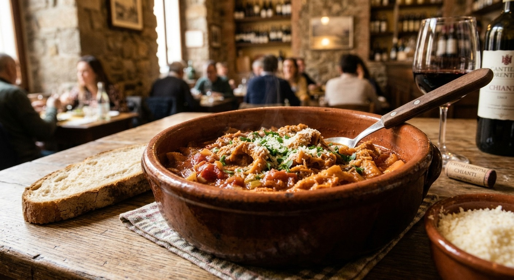
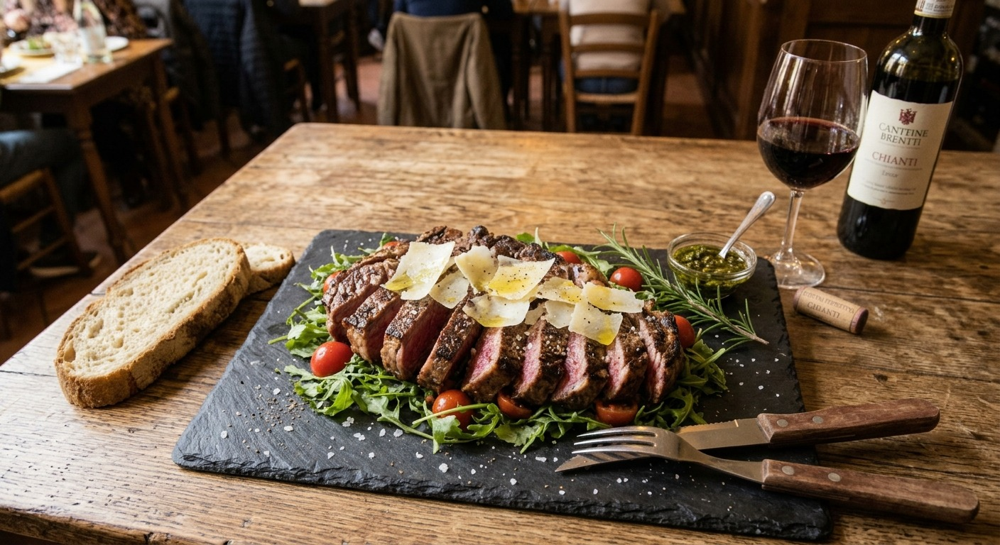
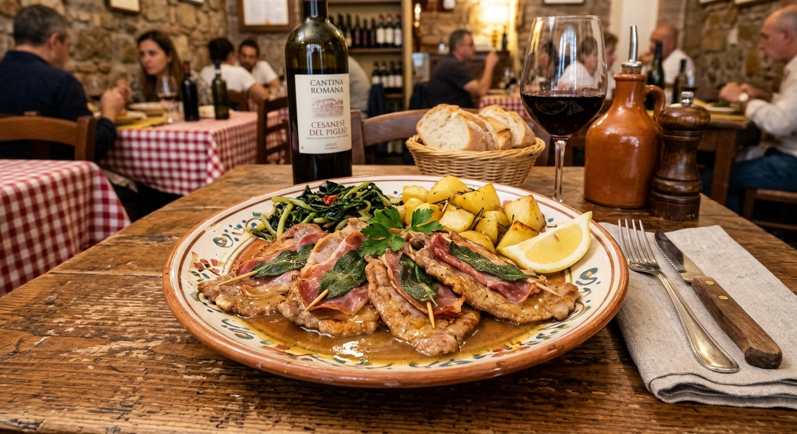

Dalla pasta fresca fatta in casa ogni mattina alle ricette
tramandate da
generazioni.
Presso la Trattoria IL PANZONE, ogni piatto è una
celebrazione dell'ospitalità italiana.
Trippa di scottona tagliata a striscioline e stufata lentamente in tegame di terracotta con pomodoro, soffritto d'odori e pepe. Servita fumante con una generosa spolverata di Parmigiano Reggiano e fette di pane casereccio.

Prezzo: 13.00$
Taglio pregiato di manzo cotto alla griglia, adagiato su un letto di rucola fresca e pomodorini ciliegino, ultimato con scaglie di Parmigiano Reggiano e un filo d'olio extravergine d'oliva a crudo.

Prezzo: 9.50$
Tenerissime fettine di vitello con prosciutto crudo e foglia di salvia fresca, saltate in padella e sfumate al vino bianco. Serviti nel loro saporito fondo di cottura al burro, accompagnati da patate dorate al forno e cicoria ripassata.

Prezzo: 9.50$